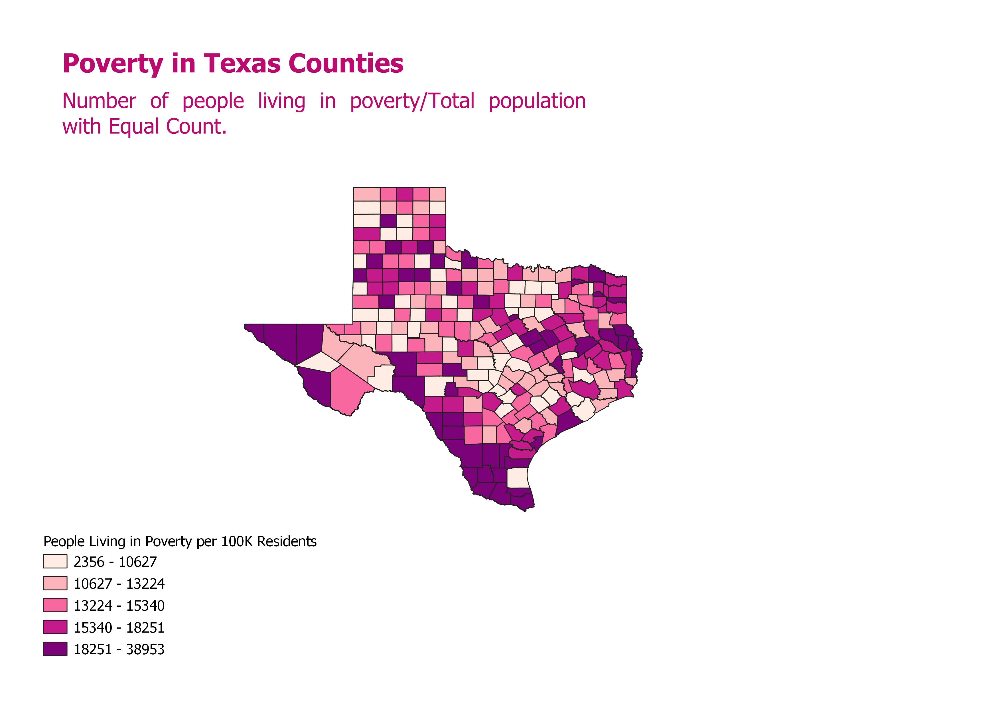
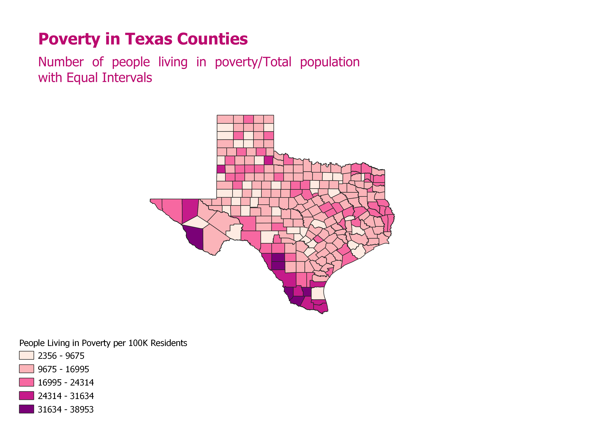
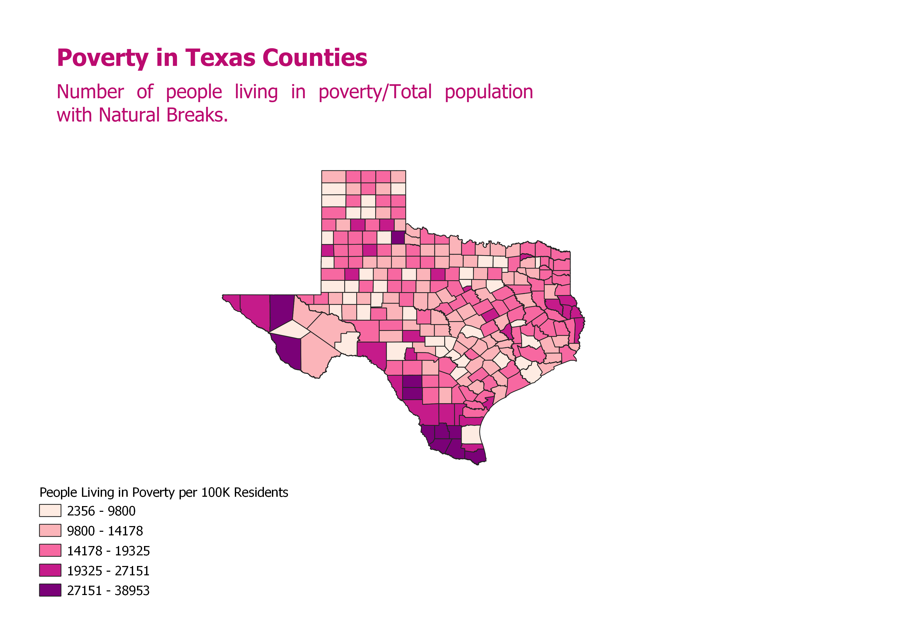

Homework 8: Ratio Chloropleth
Kelawni Hansquine
This map depicts poverty levels in Texas per 100 thousand residents and uses Equal
Count intervals, so there are the same number of counties in each category. This provides
a good understanding when trying to evaluate how counties compare using bracket-like groupings.
However, since some groupings are smaller than others, it does not give as accurate a
representation about distribution of poverty levels.

The next map uses Equal Interval classification to depict poverty levels in Texas per 100
thousand residents. Equal interval classification creates classes that contain an equal amount of values. This
type of classification is good for giving an accurate representation of distribution levels. However,
if a large portion of the data is on the high or low end extreme, then the chloropleth might not provide
useful visualization with which to compare counties.

The final map depcits poverty levels in Texas per 100 thousand residents using natural breaks
classification. In this case, intervals are determined by naturally occurring groupings in the data.
This ensures that coloration is depicted in a more informative way in cases where data might be clustered or
follow a different pattern from the rest of the majority. However, since interval size varies widely, the
classifications may not give as consistent information about distribution.

Data Used for this Project
Cleaned Texas Population Data
Cleaned Texas Poverty Data
Texas Vector Layer